Members hub, step 1: comps
Static comps in Studio's Basalt system (dark, as Studio ships). Each opens as a page; PNGs are full-page captures at 1440 and 390 wide. Realistic data: Northwind Labs, 14 people across Billing app, Ops console and Data warehouse.
Look at these first
- Roster cards (01): square cards, initials in a hairline square, level as a tag; every group carries a one-line meaning. Cards and list share the groups.
- Grant card (04): segmented platform role, the role checklist (checked first, "also gives", Admin-only with reasons, escaped names), one Save per card, unsaved state as a sand edge.
- Privilege editor (08–10): one matrix per schema with a column drill-in, staged cells in sand, greyed "owned by X" rows, and the review / refusal / conflict states in the one right panel.
- Personal logins (04, 05, 12): Admins see Delete only; Renew lives on the owner's own page; the reveal says where the login works (P23).
- Phone width: the rail becomes a header menu trigger (DESIGN.md's open gap); matrices scroll inside their frame, the page never scrolls sideways.
Screens
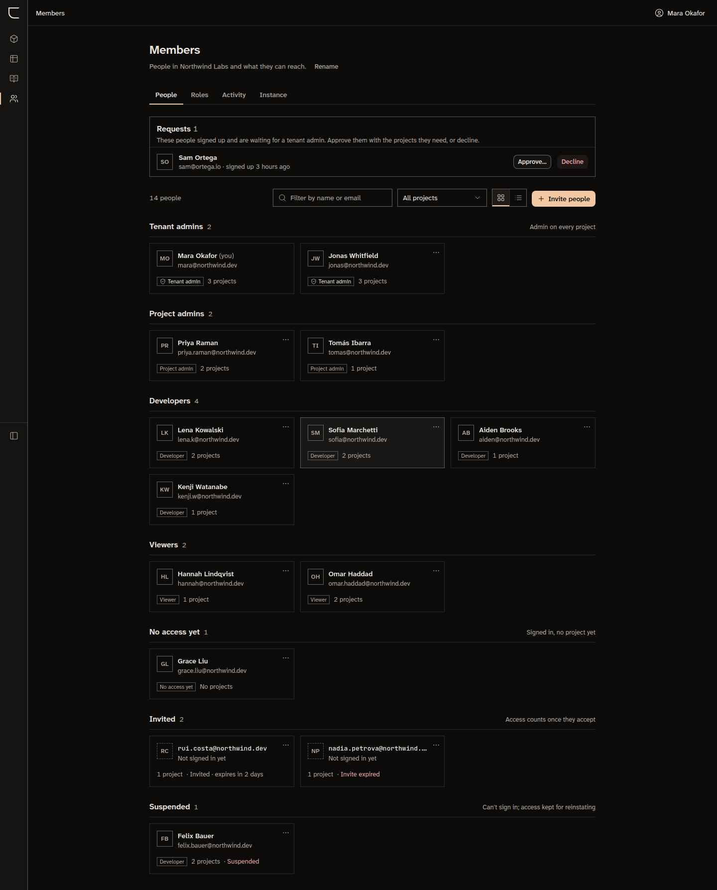
01 · Members roster
Tenant admin's People tab in cards: Requests above, then the MH-35 groups by highest level, each with a count and a one-line meaning. Status (Invited, Suspended) decides the group before level. Square cards, initials in a hairline square, level as a tag; the only sand fill is Invite people.
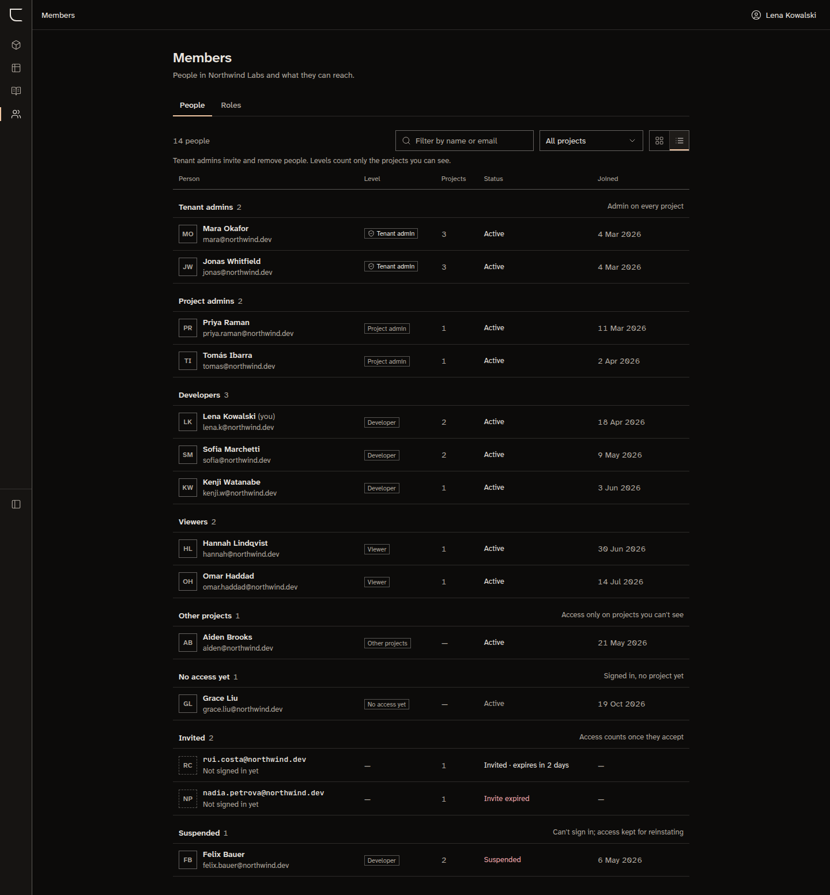
02 · Members roster list
A Developer's view in list: read-only (no Invite, no row menus, no Requests, no Activity tab). Levels and project counts cover only projects Lena can see (R1), so Aiden, who works only on Ops console, sits under Other projects (MH-35). Below 40rem the rows stack.
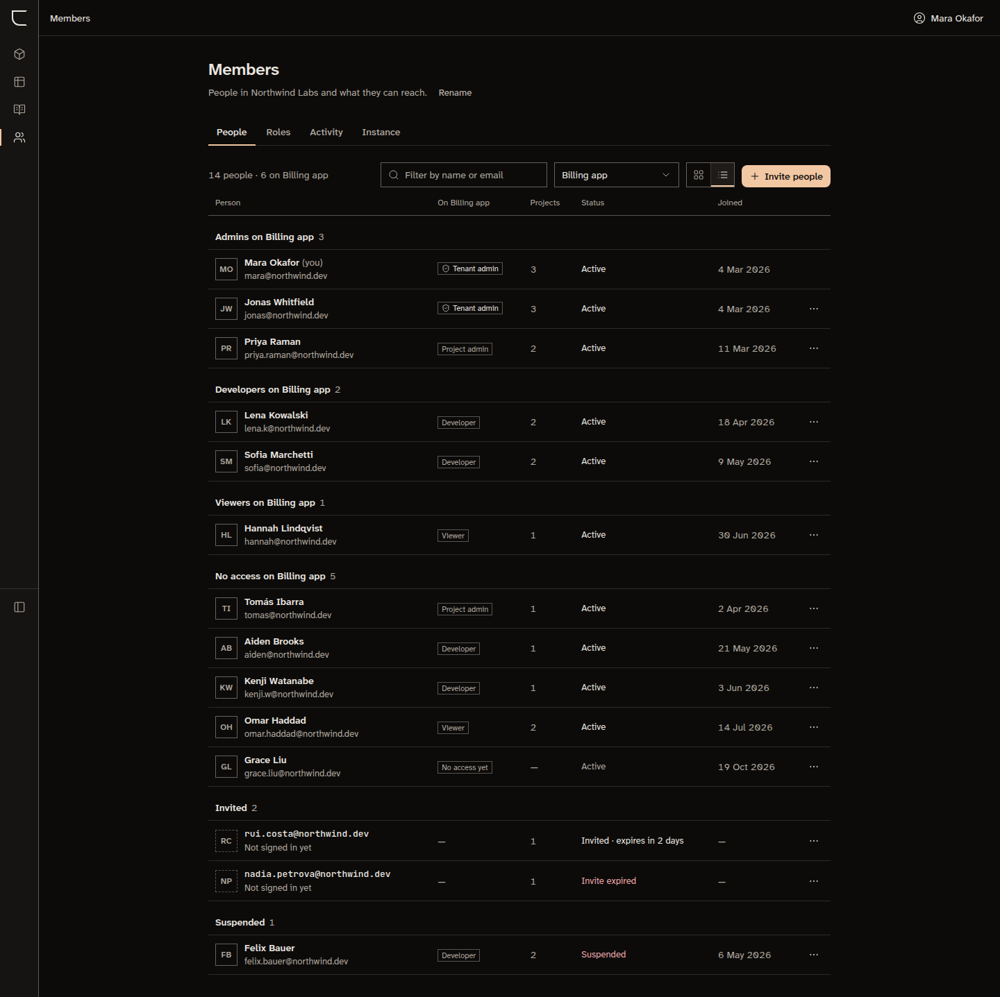
03 · Members by project
The project filter regroups everyone by their role on Billing app: Admins (tenant admins marked, they're Admin everywhere), Developers, Viewers, then No access on Billing app. Invited and Suspended stay status groups. The Level column becomes the role on that project.
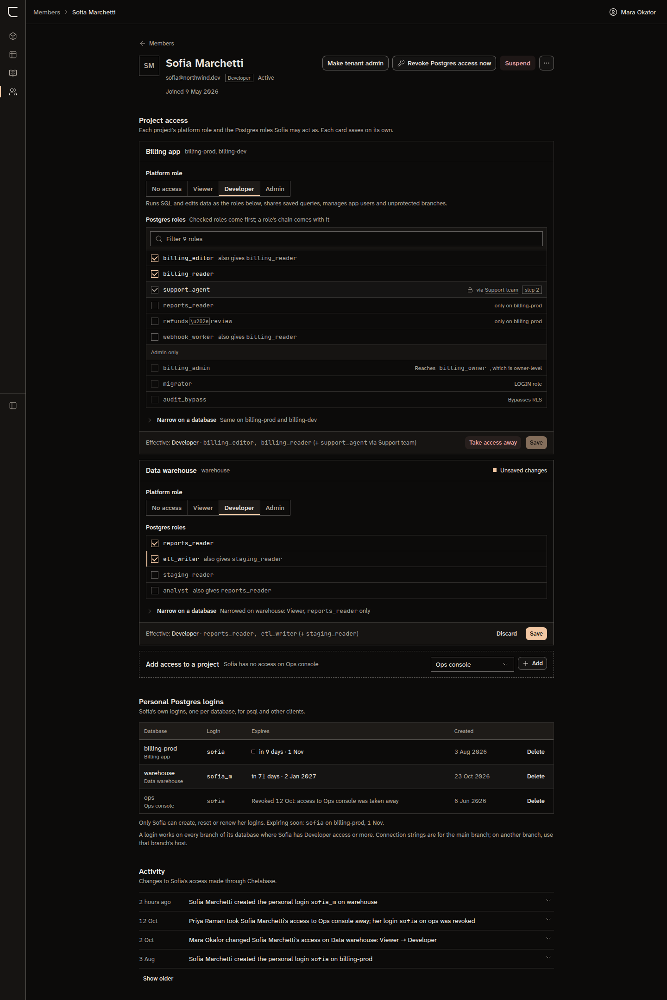
04 · Member page
A tenant admin on Sofia's page. Header actions by power (Suspend and Revoke Postgres access now are tenant-admin only, Remove from tenant in the overflow). One card per project with the segmented platform role and the filterable role checklist: checked first, 'also gives' chains, the escaped bidi name refunds\u202Ereview, the Admin-only group with reasons, and step 2's locked 'via team' row (lock + link, never sent in the PUT). The warehouse card shows unsaved edits (sand pending edge, its own Save). Logins: Admins see Delete only; expiring soon is a coral-outlined square.
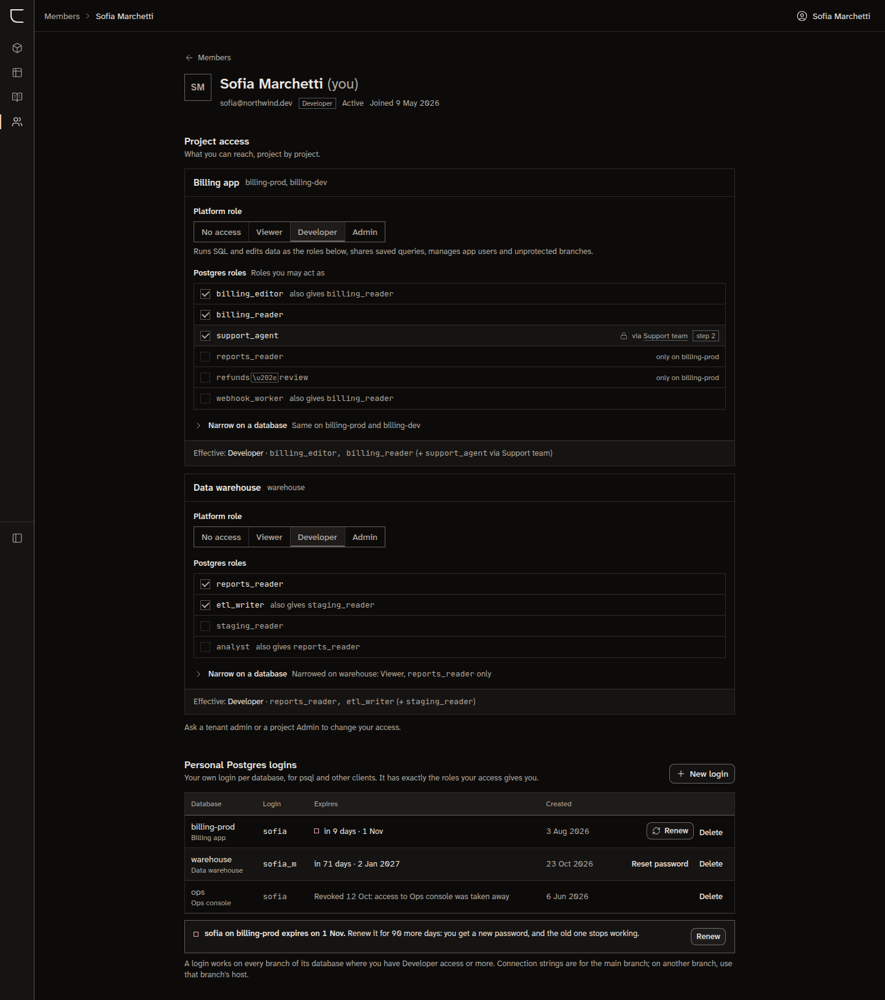
05 · Your member page
Sofia's own page: project access is read-only (no Save, roles listed but disabled, no Admin-only group), personal logins are hers to manage. Her billing-prod login expires in 9 days, so the row offers Renew and a prompt names the date and what renewing does (new password, 90 more days).
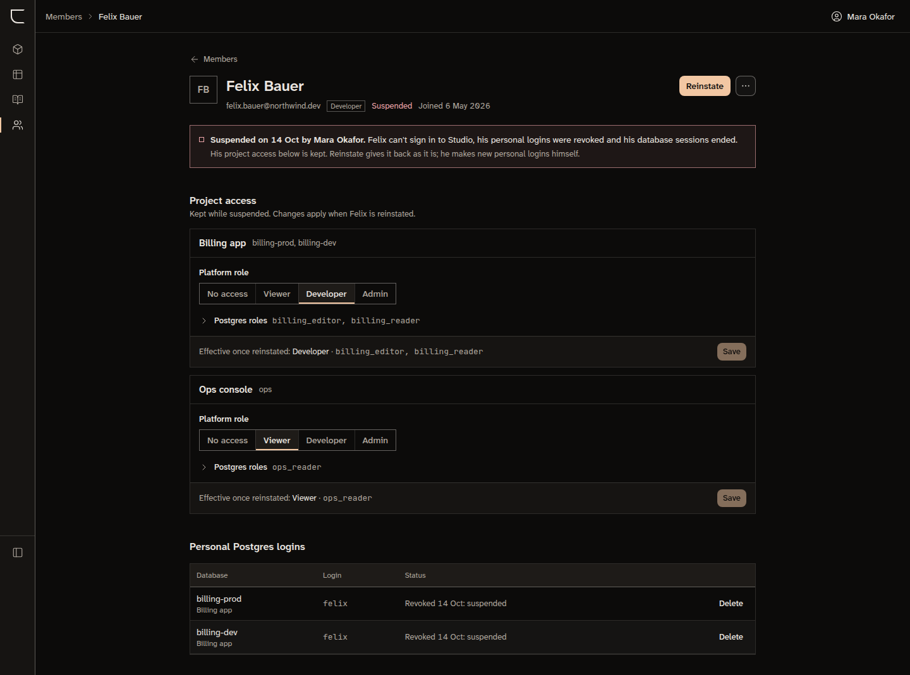
06 · Suspended member
A suspended member: the status is coral, a coral-bordered box says when, by whom and what stopped, and Reinstate is the page's one sand action. Grants stay visible and editable ('effective once reinstated'); revoked logins stay listed with their reason until deleted (P6).
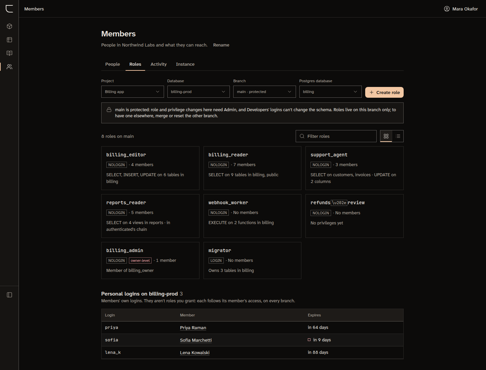
07 · Roles tab
The Roles tab for an Admin: project → database → branch → Postgres database pickers (search params), the protected-branch note, role cards with NOLOGIN/LOGIN, owner-level in coral, member counts (Admins only, MH-34; a Developer sees the same cards without counts and without the logins list), a privilege summary, and the escaped name. Personal logins are never role cards: they get their own Admin-only list (P24) linking to each member.
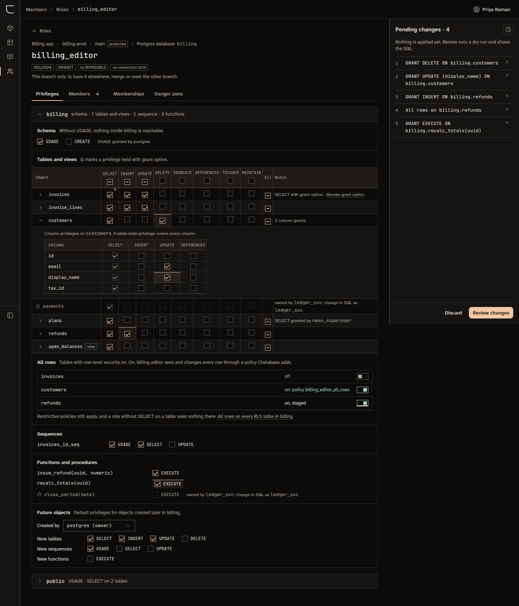
08 · Role privileges
A project Admin on billing_editor: one schema block per schema with Schema, Tables and views (objects × 8 privileges, 'all' per row and column), the column drill-in open on customers, All rows with its caveat line, Sequences, Functions, Future objects. Staged cells carry the sand pending edge; the right panel collects them (one panel, one sand: Review changes). payments and close_period are owned by ledger_svc, which the owner can't SET to: greyed with a lock and 'change in SQL as ledger_svc'. Grantors show where they matter (neon_superuser, P30); grant option is shown and only revocable (MH-29).
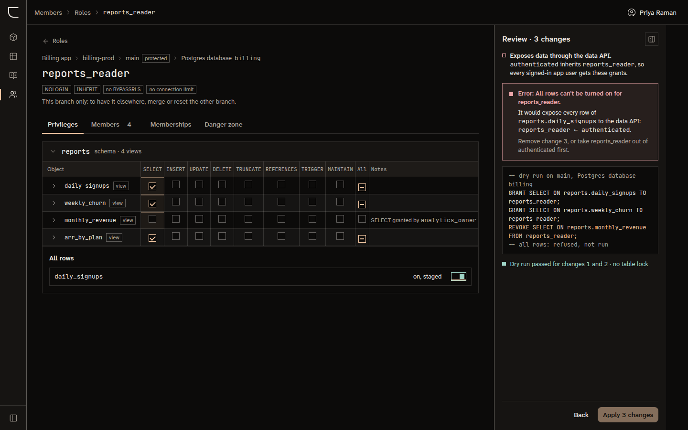
09 · Review privilege changes
Review changes: the dry-run SQL, the exposure flag (authenticated inherits reports_reader), and the dry run's 422 exposes_data_api on All rows with the server's chain. Apply stays disabled until the refused change is removed.
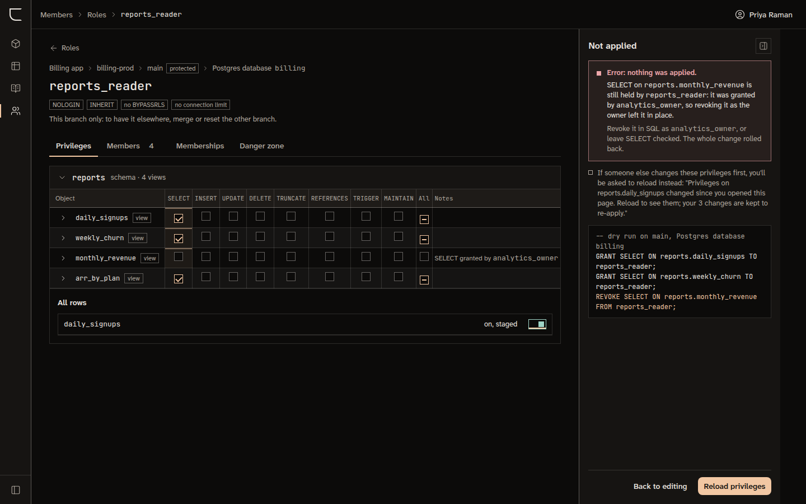
10 · Privileges not applied
After Apply, the server's verify-after check (MH-24) found SELECT still held through another grantor: 409 privileges_not_applied, named object, privilege and grantor, everything rolled back. The staleness 409 (privileges_changed_since_read) is a different message: reload, keep the staged changes.
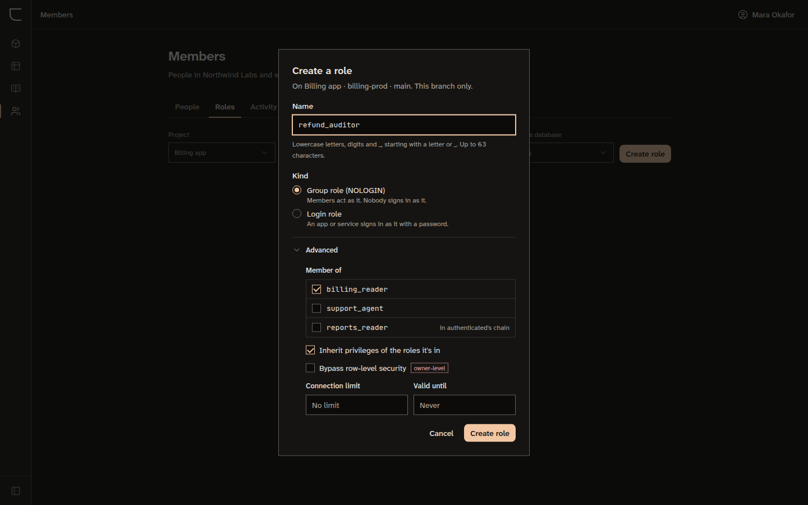
11 · Create role
Create role: name with the API's rule, NOLOGIN by default (spelled as 'Group role'), Advanced open: member of (with the data-API chain noted), inherit, bypass RLS tagged owner-level, connection limit, valid until. Owner-level creation stays in the branch Roles panel. After creating, Studio opens the new role's page.
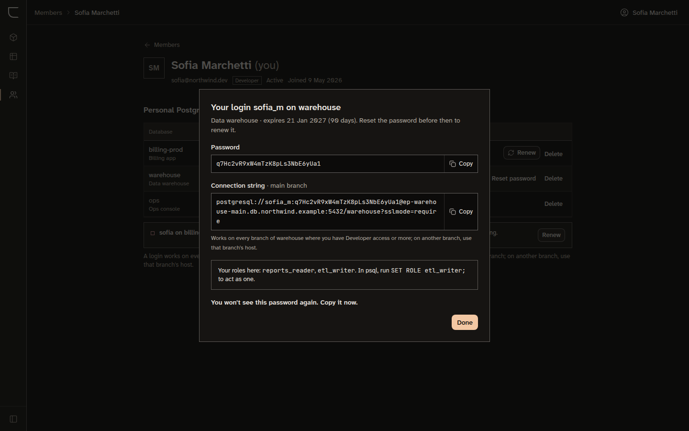
12 · Personal login password
The shown-once reveal after New login (or Reset / Renew): password and main-branch connection string, each with Copy; P23's note on branches; the roles the login can SET ROLE into. 'You won't see this password again' is plain chalk weight, not a warning colour. Done is the only way out (no click-outside dismissal); the secret lives in the dialog's state only.
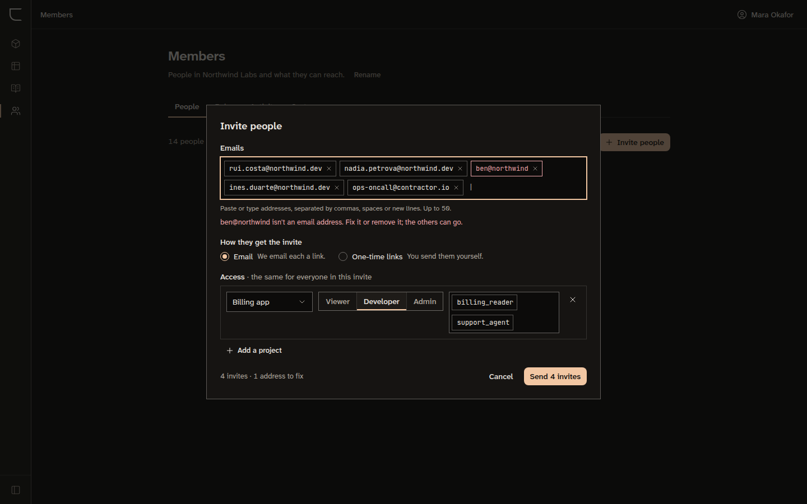
13 · Invite people
Several emails per invite: pasted addresses become chips, an invalid one is coral-outlined with its reason and is never sent (the button counts only valid ones). Delivery and access are shared by the batch; access rows are today's grant rows.
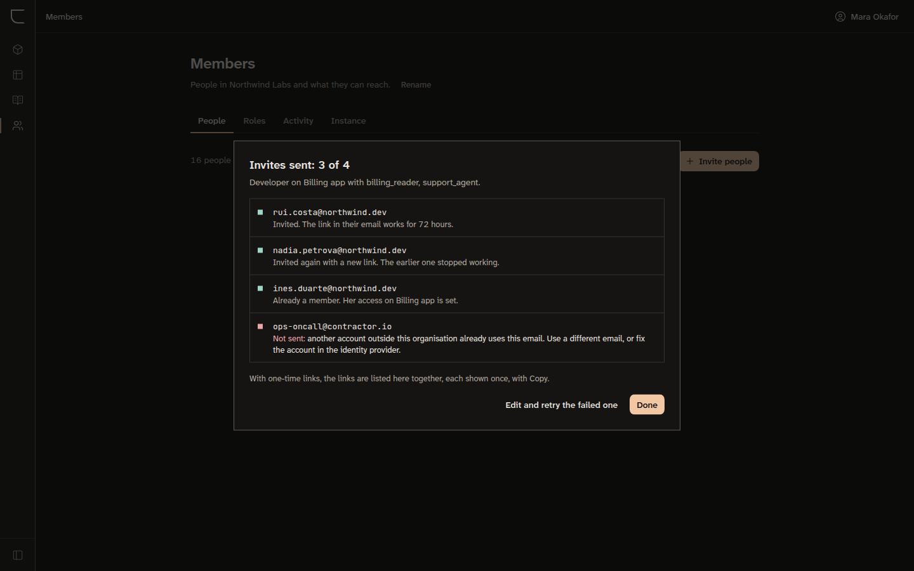
14 · Invite results
After sending: one result per email (R8: sent in sequence), seafoam square for done, solid coral for failed with the server's reason in words. The title counts. Failed addresses can go back into the form; the successful ones aren't sent twice.
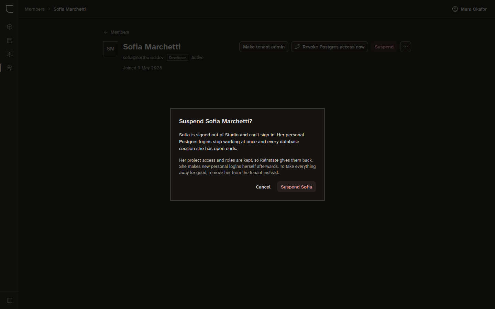
15 · Suspend member
Suspend's confirm: what stops now, what's kept, how to undo it, and the permanent alternative. Destructive button, no sand.
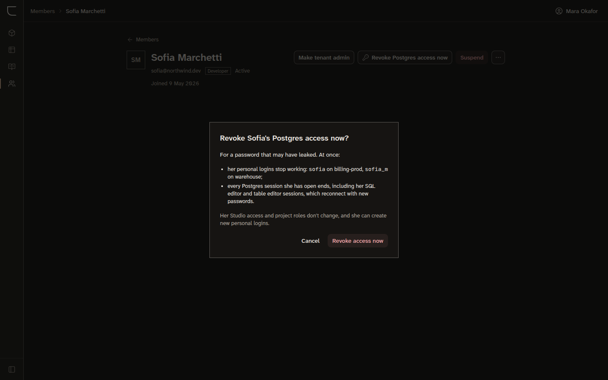
16 · Revoke Postgres access
Revoke Postgres access now: names the logins that stop, says sessions end (P16: cb_m_* passwords rotate, so Studio's own sessions reconnect), and what's untouched.